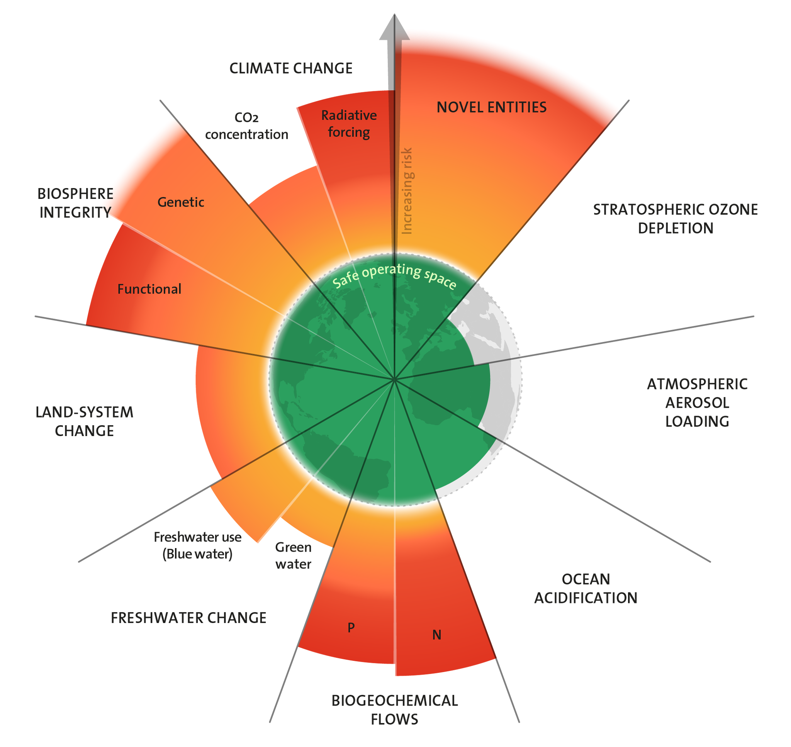

Planetary boundaries
The planetary boundaries concept presents a set of nine planetary boundaries within which humanity can continue to develop and thrive for generations to come. These nine boundaries are: novel entities, stratospheric ozone depletion, atmospheric aerosol loading, ocean acidification, biogeochemical flows, freshwater change, land-system change, biosphere integrity, and climate change.

As can be seen in the figure we are currently beyond six of the nine planetary boundaries. Important to note is that the notion of planetary boundaries can include other models than the nine boundaries above.
Connected to:
- [[Biodiversity loss]]
- [[Climate change]]
- [[Desertification]]
- [[Ecological crisis]]
- [[Microplastics]]
- [[Pollution]]
- [[Tipping points]]
- [[Energy consumption increasing]]
- [[Ancient sunlight, old sunlight, current sunlight]]
- [[Ignored externalities]]
- [[Consumerism]]
- [[Growth]]
- [[Waste]]
- [[Illusion of GDP decoupling]]
- [[Material extraction]]
- [[Limits to growth]]
- [[Biased evidence selection]]
- [['Radical' options]]
- [[Naive progress narrative]]
- [['Longtermism']]
- [[Business-as-usual narrative]]
- [[Solutionism]]
- [[Reliance on tech]]
- [[Exponential tech]]
- [[Naive techno-optimism]]
- [[Population increase]]
- [[Populations entering the 'middle class']]
- [[Lack of agency]]
- [[Too much speed and noise]]
- [[Acceleration]]
- [[Debt]]
- [[Breakdown of information infrastructure]]
- [[Hemispherical asymmetry (Earth)]]
- [[Carbon fundamentalism]]
- [[Multipolar traps]]
- [[Moloch]]
- [[Complexity mismatch]]
- [[Lack of systems thinking]]
- [[Illusion of no option]]
- [[Ineffective institutions]]
- [[Greenwashing]]
- [[Sustainable growth]]
- [[Climate footprints]]
- [[Blaming the people]]
- [[Finite games]]
- [[Carelessness]]
- [[Unheeded warnings]]
- [[Ignoring complexity]]
- [[Ignorance of ongoing collapse]]
- [[Lack of the longterm]]
- [[Lack of a living world view]]
- [[Poisoning the water, the earth, the air]]
- [[Ignorance of everything being sacred]]
- [[Delusional domination of nature]]
- [[Ignorance of interconnectedness]]
- [[Despair]]
- [[Directionlessness]]
- [[Inequality]]
- [[No respect for indigenous wisdom]]
- [[Mass climate migration]]
- [[Resource conflicts]]
- [[War]]
- [[Greed]]
#Ecological_metacrisis